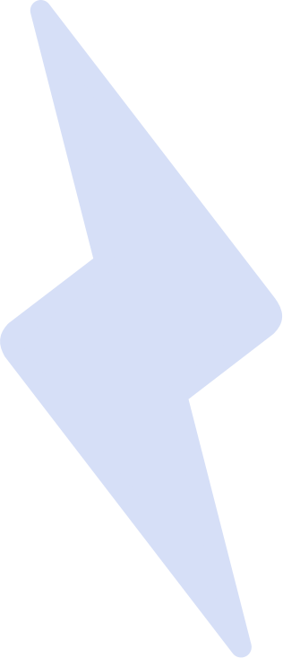

Identity
My face is placed behind liquid glass, representing how my perspective as a designer is shaped through distortion and interpretation.
“Design is thought made visible”

Control in Motion
Swirling liquid glass visualizes flow state, a space where structure and instinct can coexist.
“Control in motion — Flowstate”

Refraction
Light passing through a central glass form symbolizes creativity as transformation and ideas being shaped or reinterpreted.
“Creativity is light,
refracted through imagination”

Expansion
Glass forms break beyond containment, representing growth and pushing boundaries.
“Pushing boundaries...
Define what's next
Create beyond limits”
The Narrative
As an emerging designer, this project communicates who I am, what my work stands for, and explores my design identity through a series of self-representational posters.
Concept
My work is driven by contrast, balancing clarity with tension to create visuals that feel both controlled and expressive. I define good design as controlled disruption: work that is structured and intentional at its core, but pushes just enough to create edge.
To express this, I developed a visual system centred around liquid glass.
Glass represents precision and clarity, while its liquid form introduces distortion, movement, and unpredictability. This contrast reflects my approach to design, maintaining control while allowing space for experimentation.

I began by writing short reflections on my design philosophy, creative influences, and visual preferences. These ideas formed the conceptual foundation of the posters, guiding both the messaging and visual direction.
The Execution


Lo-Fi Exploration
I created a series of black-and-white sketches to explore composition, hierarchy, and contrast using core design principles.
This stage allowed me to test layouts quickly and focus on structure before introducing visual complexity.
AI as a Design Tool
Using Adobe Firefly, I generated visual elements and portrait variations aligned with my intended aesthetic.
Rather than relying on raw outputs, I curated and refined results, selecting, editing, and tweaking images to match my design vision. AI functioned as a tool for exploration, while final decisions remained intentional and controlled.


